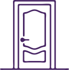
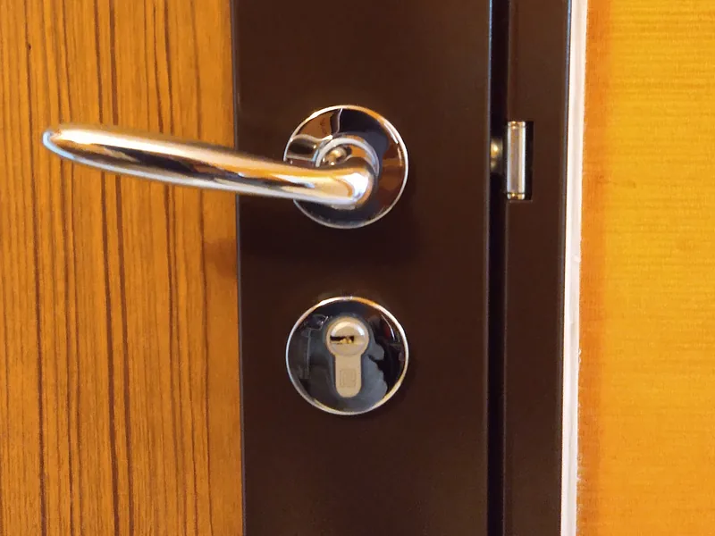
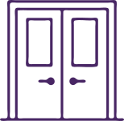

Ouverture de porteClaquée, verrouillée ou clé cassée : j’ouvre sans casse chaque fois que c’est possible.
- Porte claquée derrière vous
- Porte verrouillée, clé introuvable
- Clé cassée dans la serrure
Porte claquée, serrure bloquée, cylindre à changer : je viens à vélo cargo depuis Toulouse, avec environ 20-30 minutes de trajetde jusqu’à Balma.
À Balma, les maisons dominent et sont souvent assez récentes, mais les résidences et les immeubles, comme à Vidailhan ou à Gramont, ne manquent pas. Porte d’entrée, cylindre, serrure ou poignée : je m’adapte à chaque logement, et l’ouverture sans casse reste ma priorité.


Ouverture de porteClaquée, verrouillée ou clé cassée : j’ouvre sans casse chaque fois que c’est possible.
Un cylindre qui fatigue, ou une serrure à renforcer.

Mise en sécuritéAprès une effraction, ou pour mieux protéger vos accès.
Un commerce dont la porte ne ferme plus ne peut pas rester ouvert à tous les vents, et une sortie de secours défaillante ne peut pas attendre. J’interviens sur :
Vous décrivez la situation, je vous annonce un tarif indicatif avant de me déplacer.
Sur place (30 min max) ou par photos, puis devis édité.
J’ouvre sans casse quand c’est possible ; facture émise, paiement sur place ou par virement.